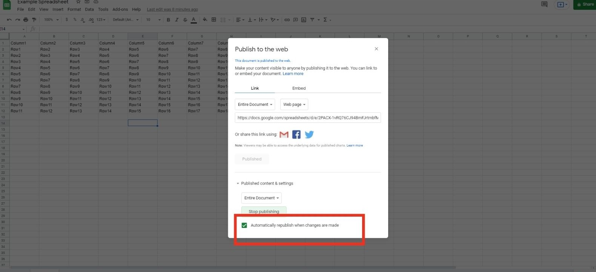

For those of you that want to start making websites, learning proper backend may take a very long time. Servers, databases and PHP, learning backend will take you quite a decent amount of time. A great alternative is to use Google Sheets!
Fortunately for us, it is actually extremely simple to link Google Sheets to our website using Javascript. This allows us to use Google Sheets as a “pseudo-database”, giving us the option to load dynamic content in our websites without having a fully developed back-end system!
In today’s article, I will talk about why exactly we need to link Google Sheets to our Javascript and how to do it!
Dynamic Content
Why do we want to connect our website with Google Sheets, or have any form of backend in our website? It’s so our website is able to load Dynamic Content. This means that our website’s content will load each time a user comes to our website! I’ve talked about the difference between Dynamic and Static web pages before in my other article on Selenium.
Social Media platforms like Facebook fill your feed with Dynamic content.
Simply put, by connecting our website to Google Sheets, it allows us to load data from Google Sheets itself. This means that making changes in our Google Sheets will thereby affect how our website will load! This is very useful because it means we can use Google Sheets as a database to store all kinds of information.
Read on to learn how to use Google Sheets as a Database!
For example, our website uses Google Sheets to store a history of all our articles. By connecting Google Sheets to our website using only Javascript, we are able to update our website with the latest articles posted very efficiently without ever needing to change any lines of code in our HTML file! All we have to do is add a new entry in our Google Sheets, and everything will load automatically!
Ideally, a more robust backend system should be built if your website requires faster querying and loading of larger chunks of data, but Google Sheets provides a much simpler method of loading data while also being relatively efficient!
I can think of a few other types of websites that can use Google Sheets as a database with relative ease. For example:
- Blogs accessing a record of all past articles
- E-commerce site accessing a record of all current products
- Photography site accessing a record of different types of photos
But that’s enough talking, let’s get to how we use Google Sheets in our Javascript!
Publishing your Google Sheets
The first step to accessing your Google Sheets through Javascript is to publish your Google Sheet. This is a very simple process which will make your Google Sheet available to the internet, therefore allowing us to access it through our Javascript later on. However, publishing your Google Sheet does have some security concerns.
If your Google Sheet contains very sensitive information, I will highly discourage publishing your Google Sheet online. This is because anyone on the internet will be able to view your Google Sheet the moment you publish it! For example, if you have information about client details, bank account numbers etc. stored in your Google Sheet, you may want to look into more secure methods of loading your Dynamic Content.
Please be conscious of the sensitivity of your Google Sheet!
However, people will not be able to edit your data whatsoever. This is assuring because it means that our Google Sheet will not be meddled with and our website will not load any wrong information.
Anyways, here’s how to publish your Google Sheet:
- Go to the Google Sheet you want to link to your website
- Click on File > Publish to the Web
- Click Publish
- Google Sheets will automatically publish all changes you make instantly. If you want to change that, click on Published content & settings and uncheck the “Automatically republish when changes are made” option

Instantly publishing any changes may seem good, but it also means that any mistakes when inputting data into your Google Sheets will directly be displayed on your website! If this is an issue, you may want to uncheck this option and only re-publish the Google Sheet after proper changes were made.
That’s all! Your Google Sheet is published on the internet and we are ready to access it with our Javascript!
Reading your Google Sheet
Now all it takes to read our Google Sheet with Javascript is to request it! Using JavaScript, all we have to do is to fetch the Google Sheet and locate our data before using it! In this article, we will be fetching our Google Sheet data in the form of JSON, which will make things easier when we want to locate our data.
Before fetching our Google Sheet data, we must first know the ID of our Google Sheet. Go to your Google Sheet and take note of its url. We can simply get our ID to our Google Sheet from that url! The link will be from “d/” to “/edit#gid=0”, for example:
For a Google Sheet that looks like this:
https://docs.google.com/spreadsheets/d/1D60gB7e9k1wLAficSZFLTjZtzHfOxY5lS4u41CWuXlw/edit#gid=0
The ID for this Google Sheet is:
1D60gB7e9k1wLAficSZFLTjZtzHfOxY5lS4u41CWuXlw
With this ID, we can now fetch our data in JSON format. The code should look something like this:
const response = await fetch("https://spreadsheets.google.com/feeds/cells/”YOUR ID HERE”/1/public/full?alt=json").then(response => {return response});
const json = response.json();
console.log(json);
Simply input your ID in place of “YOUR ID HERE”, and you should be able to fetch the data from your Google Sheet in your JavaScript!
However, viewing your console, you may realise that the json printed is less than ideal. Our data is actually hidden behind many layers of unnecessary properties!
Extracting Data from Google Sheet
To access our data, we need to access the “feed” property, then the “entry” property. This will return us a list of each cell in the Google Sheet.
let list_of_cells = json.feed.entry;
Then, to extract the values out of each cell, we have to access the “gs$cell” property, followed by the “$t” property. If we wanted to print out each cell value in our Google Sheet, it may look something like this:
for (cell of list_of_cells) {
console.log(cell.gs$cell.$t);
}
That’s about it! This was a complete step-by-step guide to using Google Sheets as a “pseudo-database” with JavaScript! It’s pretty simple, and I highly urge anyone that needs to make their website load Dynamic content to try using Google Sheets as their database!
Conclusion
Fetching Google Sheets with JavaScript may not be something that popular, but I sincerely believe that it is a very apt way of retrieving data from a database for smaller scale websites! It is relatively simple and it also requires minimal effort to update the Google Sheet!
I hope that you have learned something from today’s article, and if so, please subscribe to our email newsletter! We provide interesting and useful content about all things programming, so do stay tuned! Stay cool, cucumbers!